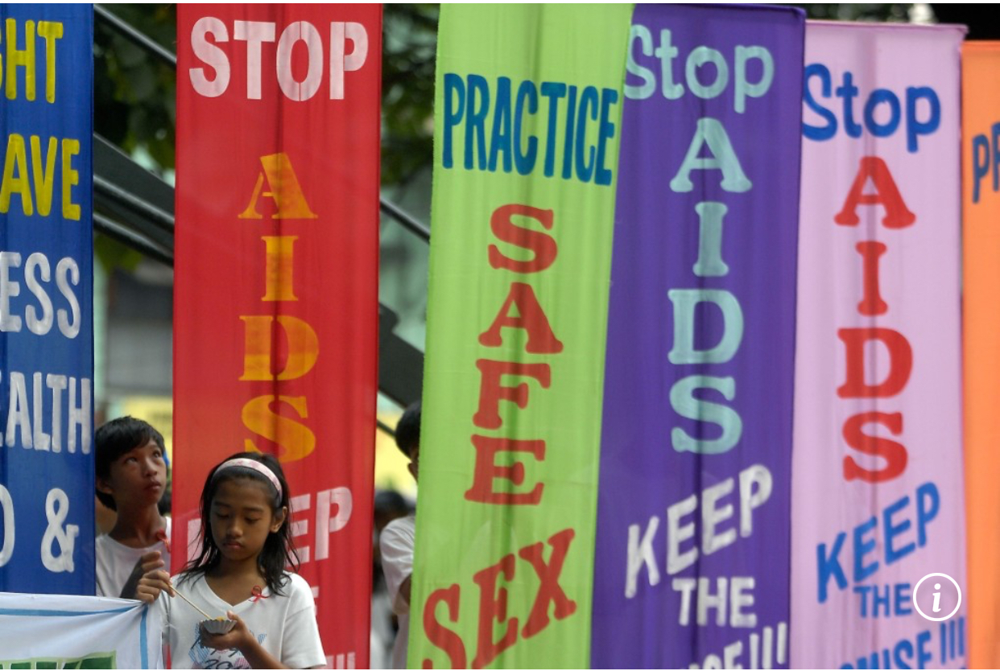

The history of women's reproductive health has been shaped by evolving scientific insights and societal attitudes, with taboos significantly influencing cultural norms and health outcomes. Despite advances in global health education, discussions around sex and reproduction often remain cloaked in secrecy and stigma. Cultural biases contributed to misunderstandings and restricted women's access to medical care. In many societies, menstruation is negatively perceived, with menstrual blood considered unclean, leading to shame and social pressure to conceal it. These framed menstruation as a "hygienic crisis" needing concealment. In medieval Europe, women's voices were excluded from discussions about their bodies, with male physicians dominating the field. Women were marginalized, denied positions of power, and often seen as deceptive or incompetent, which left their needs overlooked.
History of Women's Reproductive Health


These historical taboos continue to affect contemporary society, impacting access to healthcare services, including contraception and safe childbirth. Cultural expectations often compel women to prioritize family honor or adhere to strict moral codes, sometimes at the expense of their health. Adolescence presents additional challenges as young people navigate complex relationships (Leekuan, Kane, Sukwong, & Kulnitichai, 2022). To address these issues, breaking taboos and encouraging open discussions about reproductive health is essential. Educating both men and women about sexual and reproductive health can dismantle harmful stereotypes, empowering women to take charge of their health and ensuring they have the necessary knowledge and resources for a healthy life.
| Period | Year | Advancements | Gaps |
|---|---|---|---|
| 19th Century - Early 20th Century | 1898 | First maternity hospital in the Philippines, Hospicio de San José, is established to provide maternal care and assist women in childbirth |
|
| Mid-20th Century (1940s-1970s) | 1950s | The government starts maternal and child health programs to address high infant and maternal mortality rates |
|
| 1967 | The Philippine Population Commission (POPCOM) is created to promote family planning and population control programs | ||
| Late 20th Century (1980s-1990s) | 1994 | The Department of Health (DOH) launches the Philippine Family Planning Program, expanding contraceptive access to married couples | Government-led family planning programs mainly focus on married women, leaving unmarried women and teenagers with limited options. |
| 1998 | The Magna Carta of Women is enacted, ensuring reproductive health rights and gender equality in government policies | Many public hospitals still lack specialized maternal health services, increasing risks for pregnant women with medical complications. | |
| Early 21st Century (2000s to 2010s) | 2012 | The Responsible Parenthood and Reproductive Health (RH) Law is enacted, ensuring access to contraceptives, maternal care, and reproductive health services nationwide |
|
| 2016 | DOH implements free HPV vaccination for young girls to prevent cervical cancer. | ||
| Present (2020s to present) | 2020 | The government expands the National Safe Motherhood Program, strengthening maternal healthcare services in public hospitals |
|
| 2021 | DOH increases investments in comprehensive sex education and reproductive health awareness programs to reduce teenage pregnancy rates | ||
| 2023 | Increased government funding allows greater distribution of birth control methods in public health centers |